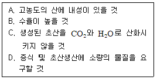
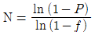
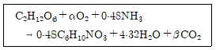
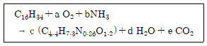
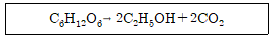
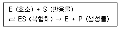
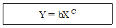

바이오화학제품제조기사 (2009-05-10 기출문제)
1과목: 미생물공학
1. 처음 세포수가 102 cells/mL, 2시간 뒤의 세포수가 104cells/mL 이면, 이 미생물의 세대시간 (doubling time)은 약 몇 분인가?
- 10
- 18
- 20
- 25
(정답률: 85%)

2. 미생물 배양액의 생균수 측정방법이 아닌 것은?
- 평판계수법
- 혼합희석배양법
- 멤브레인필터법
- 건조중량법
(정답률: 71%)
3. 구연산(citric acid)의 산업적 생산에 이용되는 미생물은?
- Aspergillus niger
- Bacillus subtilis
- Escherichia coli
- Staphylococcus aureus
(정답률: 100%)
4. 효모를 이용하여 포도당으로부터 에탄올을 발효 생산한다. 포도당이 전부 에탄올로 전환된다고 할 때 100g 의 포도당으로부터 얻을 수 있는 에탄올의 양은 약 몇 g 인가?
- 100
- 92
- 51
- 46
(정답률: 60%)
5. 다음 [보기] 중 초산생산에 적합한 균주가 구비해야 할 요건을 모두 나열한 것은?

- A
- A, B
- A, B, C
- A, B, C, D
(정답률: 56%)
6. 젖산발효에 관여하지 않는 균주는?
- 락토바실러스(Lactobacillus)속
- 스트렙토코커스(Streptococcus)속
- 슈도모나스(Pseudomonas)속
- 류코노스톡(Leuconostoc)속
(정답률: 78%)
7. 라이신(lysine)발효를 위하여 Corynebacterium glutamicum 을 이용한 균주개량에서 가장 중요한 것은?
- 호모세린(Homoserine) 요구성 변이균주
- 항생제 내성균주
- 삼투압 내성균주
- 이소루이신(isoleucine) 요구성 변이균주
(정답률: 87%)
8. Aspergillus oryzae 에 의해서 포도당으로부터 생산되며 플라스틱, 살충제 등의 원료로 사용되는 유기산은?
- Acetic acid
- Fumaric acid
- Malic acid
- Kojic acid
(정답률: 93%)
9. 일반적인 미생물 배양시 단일 탄소원으로만 사용되기에 가장 적합한 배지성분은?
- 효모추출물(yeast extract)
- 당밀(molasses)
- 펩톤(peptone)
- 대두박(soy meal)
(정답률: 89%)
10. 서로다른 뉴클레오티드(nucleotide)사슬 사이의 상보적 결합을 잡종화(hybridization)라 한다. 이에 대한 설명으로 틀린 것은?
- DNA사슬과 RNA사슬 사이에도 잡종화는 일어날 수 있다.
- 두 사슬간의 상보성이 높을수록 결합력은 높아진다.
- 특정 유전자의 존재 여부를 확인하기 위해 탐침자(probe)를 잡종화에 이용할 수 있다.
- 한 종의 세포 속에 특정 유전자의 존재 여부를 확인하기 위해서는 반드시 DNA를 순수 정제해야한다.
(정답률: 69%)
11. 미생물 발효배지를 제조할 때 고려해야 할 사항으로 가장 거리가 먼 것은?
- 대사산물의생산수율
- 미생물세포의 성장속도
- 미생물의 대사제어
- 배지의 온도
(정답률: 95%)
12. 아세톤, 부탄올을 공업적으로 발효 생산할 때 이용되는 미생물은?
- Acetobacter속
- Aspergillus속
- Clostridium속
- Saccharomyces속
(정답률: 65%)
13. 영양요구성 변이 미생물을 무엇이라고 하는가?
- autotroph
- prototroph
- auxotroph
- heterotroph
(정답률: 73%)
14. 젖산발효에 대한 설명으로 틀린 것은?
- Homo형과 hetero형이 있다.
- 공업적으로는 주로 homo형을 이용한다.
- 생성되는 젖산은 라세미(racemi)화되어 있기도 하다.
- 젖산균은 영양요구성이 매우 작다.
(정답률: 89%)
15. 연속배양(chemostat)의 장점에 대한 설명으로 옳은 것은?
- 미생물이 유전적으로 안정화된다.
- 오염의 문제가 적다.
- 생육속도가 빠른 미생물에 이용된다.
- 이차대사산물의 생산에 적합하다.
(정답률: 94%)
16. Clarke와 Carbon의 식

에서 N은 목적 유전자가 클론된 형질전환주를 알기위해 필요한 전체 재조합 형질 전환주(recombinant transformant)의 수, P는 재조합주에 원하는 유전자가 들어갈 확률, f는 총 게 놈 크기에 대한 제한절편(restriction fragment)크기의 비이다. 인간 β-hemoglobin의 유전자 크기는 1.5kb 짜리 제한절편을 몇 개 clone 해야 하는가?- 4.4 x 106
- 9.2 x 106
- 1.⑤ x 107
- 2.23 x 107
(정답률: 62%)
17. Aspergillus terreus 를 이용하여 pH2 부근에서 발효 생산되는 유기산은?
- Itaconic acid
- Lactic acid
- Acetic acid
- Fumaric acid
(정답률: 50%)
18. 재조합 단백질 생산의 숙주세포로서 대장균보다 효모가 유리한 점이 아닌 것은?
- 고등세포와 유사한 세포구조를 가진다.
- 생산된 단백질을 체외로 분비한다.
- 박테리오파지로부터 안전하다.
- 단백질 생산 속도가 빠르다.
(정답률: 87%)
19. Aspergillus niger DNA 의 [A+T]/[G+C] 비는 1일 때 C/A 의 비는?
- 0.5
- 1
- 1.5
- 2
(정답률: 94%)
20. 포도당으로부터 과당을 생산하고자 할 때 사용되는 효소는?
- glucose oxidase
- glucose isomerase
- protease
- rennin
(정답률: 86%)
2과목: 배양공학
21. 다음 중 재조합 단백질 생산에 적합한 숙주세포의 조건으로 가장 거리가 먼 것은?
- 단백질 분비 기능이 뛰어난 세포
- 고온에서도 배양이 가능한 세포
- 항생제 내성이 뛰어난 세포
- 세포내 독소를 가지지 않은 세포
(정답률: 50%)
22. 정상적으로 배양되는 동물세포는 부착 의존성(anchorage dependency)을 갖고 있다. 다음 중 부착 의존성에 대한 설명으로 틀린 것은?
- 세포내 소포체 망상조직(network)이 부착성을 유발한다.
- 세파덱스(sephadex)나 콜라젠(collagen) 등에 잘 부착한다.
- 양전기를 띈 표면에 잘 부착한다.
- 하이브리도마(hybridoma) 세포는 부착 의존성이 거의 없다.
(정답률: 44%)
23. 고정화 세포배양의 잠재적인 장점이 아닌것은?
- 고정화는 높은 세포농도를 유지할 수 있다.
- 고정화된 세포는 재사용할 수 있고 세포 회수와 재순환 공정에 드는 비용이 절약된다.
- 고정화는 세포내 축적되는 생산물을 높은 부피 생산성으로 생산 하는데 유리하다.
- 고정화는 좋은 미세환경조건을 제공하여 생물촉매의 성능을 증가시킬 수 있다.
(정답률: 70%)
24. 일반적으로 미생물을 고농도로 배양하기 위한 방법이 아닌 것은?
- Fed-batch culture
- Recycle reactor culture
- Immobilized culture
- Continuous culture
(정답률: 63%)
25. 다음 중 대형 발효조를 이용하여 본 배양을 행할 경우의 배양방법으로 가장 거리가 먼 것은?
- 고체배양
- 회분배양
- 유가배양
- 연속배양
(정답률: 69%)
26. 세포내 대사과정의 탄소골격 전구물질과 그것으로부터 생합성되는 아미노산의 관계가 옳은 것은?
- Oxaloacetate - 알기닌(arginine)
- Pyruvate - 세린(serine)
- 3-Phosphoglyceraldehyde - 알라닌(alanine)
- Erythrose-4-phosphate - 트립토판(tryptophan)
(정답률: 72%)
27. 회분식 발효시간 지체기의 시간과 대수기의 시간을 합한 것과 같다고 할 때 최대세포농도 30g DCW/L, 초기세포농도 0.5 DCW/L, 비증식 속도 0.75/h, lag time 5h 일 때 발효시간은 약 몇 시간인가?
- 5
- 10.5
- 47.5
- 165
(정답률: 77%)
28. 다음 중 세포 구성 및 생장을 위해 가장 다량으로 필요로 하는 영양원은?
- 수소원
- 산소원
- 탄소원
- 질소원
(정답률: 90%)
29. 호기성 조건하에서 포도당을 유일한 탄소원으로 사용하는 제빵효모(Saccharomyces cerevisiae)의 생장에서 다음과 같은 생장 반응식이 성립할 경우에 호흡율 RQ 는?

- 0.92
- 0.96
- 1.00
- 1.04
(정답률: 58%)
30. 다음 중 정상적인 대장균의 수분을 제외한 건조세포에서 조성 (wt %)이 가장 큰 것은?
- DNA
- Protein
- Lipid
- RNA
(정답률: 94%)
31. 원핵세포와 진핵세포의 차이점에 대한 설명 중 틀린 것은?
- 원핵세포는 DNA 분자가 한 개지만, 진핵세포 한 개 이상이다.
- 원핵세포 소포체가 없지만, 진핵세포는 있다.
- 미토콘드리아는 진핵세포에만 존재한다.
- 원핵세포는 단백질을 세포 밖으로 분비를 못하지만, 진핵세포는 분비한다.
(정답률: 63%)
32. 이단계 생장 (diauxie growth) 에 대한 설명 중 틀린 것은?
- operon에 의한 유전자 발현 기작과 관련이 있다.
- catabolite repression 에 의한 조절 기작과 관련이 있다.
- 이용성이 빠른 탄소원이 저해제로 작용하는 것이 보통이다.
- 대장균의 경우 포도당과 유당이 공존할 경우 포도당이 먼저 이용된다.
(정답률: 67%)
33. 어느 미생물이 기질탄소로 탄화수소인 hexadecane 을 이용하여 기질탄소의 2/3(w/w)를 바이오매스 탄소로 전환한다고 할 때 기질 hecadecane에 의한 미생물 수율 YX/S는 약 얼마인가?

- 0.25
- 0.51
- 0.62
- 0.98
(정답률: 31%)
34. 유전자 조작에 일반적으로 많이 사용되는 숙주(host) 나 운반체 (vector)에 대한 특성을 옳게 나타낸 것은?
- 그람양성균인 Bacillus subtilis - 플라스미드의 높은 안정성
- 곤충세포와 배큘로바이러스 - 높은 발현율, 비병원성과 안정성
- 포유동물세포와 레트로바이러스 - 불멸성, 연속성과 안정성
- 효모인 saccharomyces cerevisiae - 높은 발현율과 높은 분비 배출 효과
(정답률: 67%)
35. 다음 중 미생물 배지로 적당하지 않은 것은?
- 포도당 100g/L, 황산암모늄 5g/L, 제2인산칼륨 1.5g/L, 효모추출물 10g/L
- 백미 100g/L
- 트립톤 20g/L, 펩톤 10g/L, 효모추출물 10g/L, NaCl 5g/L
- 포도당 20g/L, 글리세린 15g/L, 구연산 5g/L
(정답률: 69%)
36. 식물세포배양과 미생물배양에 대한 설명으로 틀린 것은?
- 식물세포는 미생물에 비하여 산소요구량이 낮다.
- 식물세포는 미생물과 달리 응집현상이 이차 대사물을 생산하는데 필요하다.
- 식물세포는 세포벽이 있으므로 미생물보다 전단응력에 대해 내성이 강하다.
- 식물세포는 이산화탄소, 에틸렌 등의 기체가 대사에 이용된다.
(정답률: 59%)
37. 다음 중 배양액 중의 기질농도를 제어할 수 있어 현장에서 많이 사용하는 배양법은?
- 연속배양법
- 회분배양법
- 유가배양법
- 고체배양법
(정답률: 77%)
38. 대부분의 식물세포의 이차 대사물질이 모이는 세포내 장소는?
- vacuole
- cell wall
- chloroplast
- mitochondria
(정답률: 67%)
39. 다음 중 해당과정의 중간대사물질은?
- 피부르산
- 라이신
- 구연산
- 옥살산
(정답률: 84%)
40. 생장시기와 산물 생성시기가 다른 비생장 관련 산물을 생산할 때 가장 적절한배양법은?
- 유가식 배양
- 연속시 배양
- 회분식 배양
- 2단계 배양
(정답률: 67%)
3과목: 생물반응공학
41. 발효에 관한 설명 중 틀린 것은?
- 용존산소의 농도에 의한 선장제한을 극복하기 위해 쓰이는 배양 방법 중의 하나로 압력을 높여서 운전하는 것이 있다.
- 발효배지의 산화 환원 전위는 질소를 통과시켜 높일 수 있다.
- 아황산염 방법에 의하여 부피전달계수 KLa를 결정할 때, 황산염의 형성 속도는 산소소모 속도에 비례한다.
- 발효배지의 이온세기는 특정영양소의 세포 내ㆍ외로의 전달, 세포의 대사기능에 영향을 미친다.
(정답률: 80%)
42. 연속식 반응기의 실행에 있어 산업현장에서 실질적으로 필요할 수 있는 또 발생될 수 있는 사항으로 거리가 먼 것은?
- 균주의 변이 현상 발생
- 연속적인 무균상태의 유지 필요
- 반응기 내의 동일한 유지 필요
- 생성물의 축적에 의한 저해 현상 발생
(정답률: 58%)
43. 반응기를 대규모화시 교반탱크 반응기에서 임펠러 회전속도와 임펠러 지름의 설계에 있어 서 가장 관련이 없는 것은?
- 동력공급량
- 임펠러 끝에서의 전단응력
- 레이놀드수 (Reynolds Number)
- Michaelis-Menten 상수
(정답률: 77%)
44. 미생물의 기질로부터 균체 생성 수율이 0.5g/g인 미생물을 0.1g/L 농도로 초기 접종하여 회분식 반응기에서 배양을 하였다. 10시간 후 반응기 내 기질농도는 0.2 g/L 이었고 균체의 농도는 2g/L로 증가하였다. 초기 기질의 농도를 몇 g/L로 넣어 주어야 이와 같은 결과를 얻을 수 있는가?
- 1.2
- 1.8
- 4
- 11
(정답률: 62%)
45. Michaelis-Menten 식을 따르는 어떤 효소반응에서 초기 기질 농도 s를 달리하여 반응속도 V를 측정하였다. 측정 데이터를 X -Y 평면에 도해하여 그래프의 Y-절편으로부터 최대반응속도 Vmax 를 구하고자 할 때 가장 적절한 도해 방법은?
- (S, V)
- (1/s, V)
- (S, 1/v)
- (1/s, 1/v)
(정답률: 73%)
46. 다음 중 생물반응기의 계측기구가 갖추어야 할 조건이 아닌 것은?
- 무균성 유지
- 내구성
- 안정성
- 아날로그성
(정답률: 96%)
47. 다음 중 흡착에 의한 효소의 고정화 담체가 아닌 것은?
- 활성탄(activated carbon)
- 실리카 겔 (silica gel)
- 유리 (glass)
- Ca-알진산염(Ca-alginate)
(정답률: 73%)
48. 산소의 물에 대한 포화용해도(C*)에 영향을 주는 인자가 아닌 것은?
- 교반속도
- 배양액의 이온강도
- 배양온도
- 배양액의 점도
(정답률: 50%)
49. 다음 반응기 형태 중 산소전달 면에서 가장 효율이 낮은 형태는?
- 교반식 (stirred vessel)
- 충전식 (packed bed)
- 기포탑 (bubble column)
- 공기부양식 (air lift)
(정답률: 63%)
50. 효소의 pH 활성에 관한 설명 중 옳은 것은?
- 효소활성은 pH 와 상관없이 일정하다.
- 효소의 활성은 최적 pH에서 최고를 나타내며 이를 벗어나면 점점 줄어드는 경향을 나타낸다.
- 모든 효소가 작용하는 pH의 범위는 4~6이며 이를 벗어나면 활성이 없다.
- 사람의 위에서 분비되는 소화효소 펩신의 적정 pH는 7 근처 이다.
(정답률: 82%)
51. 효소의 일반적인 특성에 관한 설명으로 옳은 것은?
- 반응의 평형상수를 감소시킨다.
- 반응속도에는 영향을 미치지 않는다.
- 자유에너지를 감소시킨다.
- 반응의 활성화에너지를 낮춘다.
(정답률: 85%)
52. Scale-up시 자주 활용되는 인자로서 발효조를 80L에서 104L scale-up 할 경우 그 값이 변하지 않는 것은?
- 단위 용적당 투입 동력
- 총 산소 투입량
- 유체의 레이놀드 수
- 임펠러의 회전수
(정답률: 67%)
53. Chemostat (완전혼합 연속 배양기)로 조업되는 생물 발효반응기가 있다. 미생물이 균형성장을 하고 있을 때 희석률(dilution rate)이 0.1h-1로 유지되고 있다면 이 발효 반응기 내의 미생물의 비성장속도는?
- 0.2h-1
- 0.1h-1
- 0.⑤h-1
- 0.033h-1
(정답률: 72%)
54. 재순환이 있는 키모스탯(Chemostat) 연속배양에서 공급액의 유속은 200L/h 이고, 배양용기 의 부피는 2000L 이며, 재순환비는 0.5, 재순환 액의 농축비는 2이다. 정상상태에서 이 시스템의 비생장속도(μ)는?
- 0.025h-1
- 0.⑤0h-1
- 0.075h-1
- 0.100h-1
(정답률: 62%)
55. 기체의 멸균을 위해서 균일하고 작은 구멍이 있는 막을 사용해 체질(sieving)효과를 이용하는 것은?
- 증기 멸균기
- 크로마토그래피 멸균기
- 표면 여과기
- 흡착 멸균기
(정답률: 90%)
56. 다음의 반응으로 이루어진 효모의 에탄올 발효에 이론적산물 수율 YP/S (g/g)은?

- 0.17
- 0.32
- 0.51
- 0.94
(정답률: 53%)
57. 회분식 배양기에서 배양 시작시 기질 농도가 5g/L 이고 세포 농도가 1g/L 일 때 기질에 대한 세포 수율계수가 0.4일 경우, 배양 후 얻을 수 있는 최대 세포 농도는 몇 g/L인가?
- 2
- 3
- 5
- 6
(정답률: 75%)
58. 효소반응을 다음의 Briggs-Haldane 식 (유사정상상태식)으로 나타낼 수 있다고 가정할 때 반응시간에 따라서 농도의 변화가 가장 적은 물질은?

- 효소활성 저해물질
- 반응물질
- 생성물질
- 효소와 반응물질의 복합체
(정답률: 94%)
59. 연속살균법이 회분살균법보다 유리한 점이 아닌 것은?
- 배지의 품질이 일정하게 유지될 수 있다.
- 고형물을 다량 포함한 배지도 살균할 수 있다.
- 규모의 확대가 용이하다.
- 자동화가 용이하다.
(정답률: 74%)
60. Michaelis-Menten 속도식의 속도상수를 구하기 위한 다음의 방법 중 큰 오차가 발생될 수 있으나 낮은 기질 농도 [S]에서 얻은 자료를 이용하고자 할 때는 비교적 작은 오차를 나타내는 것은?
- Lineweaver-Burk plot
- Eadie-hofstee plot
- Hanes-Woolf plot
- Batch kinetics
(정답률: 39%)
4과목: 생물분리공학
61. 다음 중 삼투압에 관계되는 법칙은?
- Van't Hoff의 법칙
- Fick의 법칙
- Stokes의 법칙
- Darcy의 법칙
(정답률: 77%)
62. 차단되는 입자의 크기가 작은 것에서 큰 순서 대로 나열된 것은?
- 미세여과 < 한외여과 < 역삼투
- 역삼투 < 한외여과 < 미세여과
- 미세여과 < 역삼투 < 한외여과
- 한외여과 < 미세여과 < 역삼투
(정답률: 67%)
63. 다음 중 가장 낮은 회전속도에서 원심분리 할 수 있는 것은?
- DNA
- RNA
- 바이러스
- S. cerevisiae
(정답률: 83%)
64. 단백질의 침전에 일반적으로 가장 많이 쓰이는 염은?
- NaCl
- H3PO4
- (NH4)2SO4
- NaH2PO4
(정답률: 92%)
65. 막분리 공정에서 사용되는 막분리 장치 모듈(module) 중 단위부피당 최대 막여과 면적이 가장 큰 형태는?
- 중공사(hollow fiber)막
- 나선(spiral wound)막
- 관형(tubular)막
- 판(plate and frame)막
(정답률: 58%)
66. 활성화에너지20,000 cal/mol 이고 속도상수가 3 * 1012 min-1 일 때, 27℃에서 100분간의 건조에 의한 효소의 활성잔존율은 약 몇%인가? (단, 기체상수는 1.99 cal/molㆍK이다.)
- 43
- 57
- 93
- 97
(정답률: 40%)
67. 생물반응기에서 분리 (회수)와 정제 복합공정의 장점이 아닌 것은?
- 생성물에 대한 선택성
- 생성물의 변성 방지
- 반응속도 증가
- 세포용해 성분 제거
(정답률: 58%)
68. 일반적으로 여과기의 기능을 갖고 있는 원심 분리기는?
- Basket type
- Tubular bowl type
- Disk with a nozzle type
- Disc with intermittent discharge type
(정답률: 85%)
69. 재조합 효모에 의해 분비 생산된 분자량 50,000Da의 효소를 막분리 공정을 사용하여 농축하려고 한다. 다음 중 가장 적절한 공정을 순서대로 옳게 나열한 것은?
- 미세여과 → 한외여과
- 한외여과 → 미세여과
- 한외여과 → 역삼투
- 역삼투 → 한외여과
(정답률: 75%)
70. 분자량이 30000인 단백질이 녹아 있는 용액을 한외여과에 의해 농축시킨 후 농축액과 투과액 내의 단백질 농도를 측정하였더니 각각 1.0mg/mL 와 0.08 mg/mL 이었을 때 배제계수(rejection coefficient)는 얼마인가?
- 0.08
- 0.8
- 0.092
- 0.92
(정답률: 71%)
71. 다음 중 대장균과 같은 박테리아의 전형적인 크기에 가장 가까운 것은?
- 10-20 nm
- 1-4 um
- 50-100 um
- 100-300 um
(정답률: 57%)
72. 다음 중 단백질 침전을 가장 잘 유도하는 음이온은?
- citrate
- SO42-
- Cl-
- NO3-
(정답률: 48%)
73. 미생물 nuclease의 정제 공정 순서가 옳게 나열된 것은?
- 상등액 → 원심분리 → 흡착 → 투석 → 용출 → 농축 → Gel 여과 → 희석 → 동결건조
- 상등액 → 희석 → 흡착 → 투석 → 용출 → Gel 여과 → 농축 → 원심분리 → 동결건조
- 상등액 → 원심분리 → 흡착 → 용출 → 투석 → Gel 여과 → 농축 → 희석 → 동결건조
- 상등액 → 희석 → 흡착 → 용출 → 투석 → 농축 → 원심분리 → Gel 여과 → 동결건조
(정답률: 95%)
74. 다음 중 지질의 용해도가 가장 낮은 물질은?
- 벤젠
- 클로로포름
- 에테르
- 물
(정답률: 95%)
75. 1기압하에 있는 A 물질의 수용액에서 A의 몰분율이 0.01이고 이것과 평형에 있는 증기에서의 A의 몰분율이 0.2라고 할 때 물에 대한 A 물질의 휘발도 비는 약 얼마인가?
- 4.0
- 12.4
- 24.8
- 99.0
(정답률: 60%)
76. 다음 중 소수성 아미노산이 아닌 것은?
- 페닐알라닌(phenylalanine)
- 트립토판(tryptophan)
- 류신(leucine)
- 라이신(lysine)
(정답률: 87%)
77. 흡착제 단위량 당 흡착된 용질의 양 Y를 다음 과 같이 나타내는 것은 무슨 식에 해당하는가? (단, B,C는 상수, X는 평형상태에서 용액내 용질농도이다.)

- Fick 식
- Stefan 식
- Langmuir 식
- Freundlich 식
(정답률: 74%)
78. 불용성 생성물을 분리하는데 사용되는 방법이 아닌 것은?
- 여과
- 원심분리
- 응집
- 추출
(정답률: 89%)
79. 결정화공정에서의 population density와 상관 관계가 잇는 인자들로 이루어진 것은?
- 단위 길이당 결정의 형태, 질량
- 단위 면적당 결정의 길이, 시간
- 단위 부피당 결정의 수, 길이
- 단위 질량당 결정의 면적, 시간
(정답률: 75%)
80. 이상적인 액체추출제의 조건이 아닌 것은?
- 독성이 없어야 한다.
- 선택성이 있어야 한다.
- 발효액과 절 섞여야 한다.
- 생성물에 대한 높은 분배계수를 가져야 한다.
(정답률: 85%)
5과목: 생물공학개론
81. 어떤 기체 혼합물이 CO2 75 mmHg, CO 50 mmHg, N2 595 mmHg, O2 26 mmHg으로 이루어져 있을 때 CO2의 몰분율은?
- 0.035
- 0.067
- 0.101
- 0.797
(정답률: 59%)
82. 분열시 모든 세포가 20개의 플라스미드를 가지고 있는 경우, 플라스미드 불포함세포가 발생할 확률은 약 얼마인가? (단, 세포분열시 플라스미드는 무작위로 분배된다.)
- 9.5 * 10-7
- 1.9 * 10-6
- 5.28 * 105
- 1.1 * 106
(정답률: 83%)
83. Glycolysis 과정 중 주요 속도 결정단계는?
- glucose에서 glucose 6-phosphate로 되는단계
- phosphoenolpyruvate에서 pyruvate로 되는 단계
- glucose 6-phosphate에서 fructose 6-phosphate로 되는 단계
- fructose 6-phosphate에서 fructose 1,6-diphosphate로 되는 단계
(정답률: 65%)
84. 측쇄로 H-를 가지는 아미노산인 글라이신의 -COOH 기 및 -NH3+ 기의 pKa 값이 각각 2.34와 9.6 일 때, 등전하를 갖는 글라이신 0.1M 수용액의 pH는?
- 4.83
- 5.87
- 6.24
- 7.12
(정답률: 80%)
85. 500 mL의 0.025M H2SO4를 중화하기 위해 필요한 0.⑤M KOH의 양은 몇 mL인가?
- 125
- 250
- 500
- 1,000
(정답률: 65%)
86. 자외선 가시건 분광법에서 이용하는 램버트-비어 (Lambert-Beer) 법칙의 관계식으로 옳은 것은? (단, Io는 이사광의 강도, C는 농도, e는 흡광계수 It는 투과광의 강도, L은 빛의 투사거리이다.)
- Io = It ㆍ 10-eCL
- It = Io ㆍ 10-eCL
- Io = It + 10-eCL
- It = Io + 10-eCL
(정답률: 60%)
87. 의약품 제조관리와 품질관리를 위한 기준서 중 제조관리 기준서에 반드시 포함되어야 하는 사항이 아닌 것은?
- 원료약품 관리에 관한 사항
- 자재 관리에 관한 사항
- 완제품 관리에 관한 사항
- 작업소의 청정도 관리에 관한 사항
(정답률: 94%)
88. 기체크로마토그래피에 대한 설명중 틀린 것은?
- 기체이거나 휘발성이 크며 열안정성이 좋은 시료를 분리하는데 사용된다.
- 이동상과 정지상이 모두 시료성분과 상호작용을 하므로 분리조건을 선택할 여지가 크다.
- 헬륨, 질소 등이 운반기체로 사용된다.
- 기체-고체 및 기체-액체 크로마토그래피가있다.
(정답률: 82%)
89. 이란적인 완충용액을 옳게 나타낸 것은?
- 약산과 그 짝염기로 구성된 완충용액
- 강산과 그 짝염기로 구성된 완충용액
- 강산과 강염기로 구성된 완충용액
- 강염기와 그 짝산으로 구성된 완충용액
(정답률: 87%)
90. 다음 중 단백질의 분리 및 분자량 측정에 가장 많이 이용되는 방법은?
- 분광광도법
- 전기영동법
- X선회절분석법
- 핵자기공명분석법
(정답률: 83%)
91. GMP의 유효성 확인 단계 중 OQ, IQ, PQ 과정을 순서대로 배열한 것은?
- IQ → OQ → PQ
- OQ → PQ → IQ
- PQ → IQ → OQ
- PQ → OQ → IQ
(정답률: 93%)
92. 다음 중 밸리데이션 (validation) 과제 설정 후 계획수립, 실시, 결과보고 등의 과정 중 밸리데이션 계획 수립에 해당되는 단계인 것은?
- 설비ㆍ기기운용의 검토
- 각 부서별 실시 계획의 확인 및 평가
- 밸리데이션 과제의 목표 설정
- 목표 기준의 설정
(정답률: 50%)
93. 다음 중 유전자로부터 유전정보를 단백질 합성기구로 전달하는 RNA는?
- mRNA
- rRNA
- tRNA
- primer RNA
(정답률: 50%)
94. 다음 중 핵 (nucleus)의 기능이 아닌 것은?
- 유전정보의 저장
- mRNA의 합성
- 인지질의 합성
- 유전정보의 전달
(정답률: 73%)
95. 다음 중 일반적으로 에너지생산과 관련된것은?
- 생합성
- 전자전달계
- 영양소 운반
- 유지 (maintenance)
(정답률: 75%)
96. 전기영동에서 단백질 분자의 정전기적인 전하는 매체의 pH에 따라 달라지는데 이에 대한 설명 중 틀린 것은?
- pH = pI에서 전기 영동속도는 0이다.
- 단백질의 순전하에 따라 단백질의 이동속도가 결정된다.
- pH = pI에서 단백질의 순전하는 0이다.
- pH < pI 일 때, 단백질은 음전하를 띠게 된다.
(정답률: 79%)
97. 외부에서 조작된 DNA 절편 또는 vector를 세포내로 전달하는 방법이 아닌 것은?
- 세포감염능력이 있는 recombinant virus particle 을 이용한 host cell infection
- liposome을 이용한 transfection
- competent bacterial cell을 이용한 transformation
- DNA ligase를 이용한 재조합 vector 결합
(정답률: 71%)
98. 의약품 제조에 필요한 원료에 대한 원료 밸리데이션 (Validation) 방법으로 볼 수 없는 것은?
- 제품 batch를 제조하는데 필요한 원료 목록을 작성한다.
- 각 원료에 대한 시장가격을 조사하고 가격 변동을 예측한다.
- 원료 공급원이 새로운 회사로 병경된 경우 그 회사 생산시설을 방문한다.
- 안정된 공급을 위해 각 원료에 대한 공급자를 적어도 2개소 이상 확보한다.
(정답률: 80%)
99. DNA 재조합기술로 생산된 단백질과 그 용도가 틀리게 연결된 것은?
- 인슐린 : 당뇨병 치료
- 인터루킨-2 : 빈혈 치료
- 인간성장호르몬 : 성장결함 치료
- 돼지성장호르몬 : 돼지의 성장을 촉진
(정답률: 77%)
100. 세포 내에서 발견되는 염색체와는 별개인 DNA 분자로서 독립적인 복제 능력을 가지는 유전 인자들의 집합체는?
- 클론 (clone)
- 엑손 (exon)
- 플라스미드 (plasmid)
- 인트론 (intron)
(정답률: 88%)